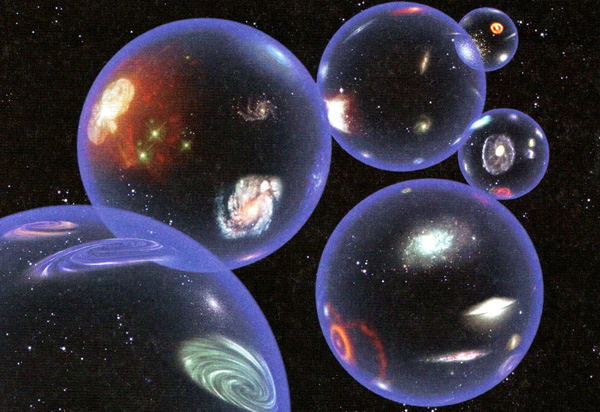
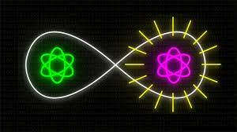

Noticias |
|||||||||
|
|
|||||||||
|  |
Existe el multiverso En 2022, el cosmólogo Carlos Frenk, profesor de la Universidad de Durham, en Inglaterra, exploró en un video de la BBC cinco misterios de nuestro universo. "No hay razón para creer que nuestro universo es único. Es muy posible que así como se creó nuestro Universo, también se crearon muchos universos", dice al abordar el primer misterio. "Si ese es el caso, entonces vivimos, no en un solo universo, sino en una vasta colección de universos a los que los físicos se refieren como el multiverso". "Podemos pensar en ellos como universos insulares, cada uno con sus propias peculiaridades, tal vez incluso cada uno con sus propias leyes de la física. "Por ejemplo, podría haber uno de estos otros universos donde la gravedad es 100 veces más fuerte que en nuestro Universo. "Si de alguna manera pudiéramos probar de manera concluyente la existencia de múltiples universos, del multiverso, eso sería una revolución intelectual genuina, un cambio completo en nuestro pensamiento cósmico" Fuente: BBC News BBC News. |
||||||||
| El Sol artificial de Corea se enciende El Centro de Investigación KSTAR, del Instituto Coreano de Energía de Fusión, ha encendido su sol artificial durante 20 segundos a 100 millones de grados Celsius. Las principales potencias nucleares llevan años intentando desarrollar un proyecto que produzca tanta energía como la del Sol. Por primera vez en la historia, el Centro de Investigación KSTAR, dependiente del Instituto Coreano de Energía y Fusión (KFE), ha conseguido que su “sol artificial” permanezca 20 segundos encendido a 100 millones de grados Celsius de temperatura, estableciendo un récord histórico. Otras investigaciones ya habían conseguido temperaturas similares, aunque no habían sido capaces de hacerlas permanecer tanto tiempo. Por ejemplo, Estados Unidos, Japón o la Unión Europea, esta última mediante el Joint European Torus, un reactor de fusión situado en Reino Unido, llegaron a los 10 segundos. Corea del Sur ha duplicado el logro de todas ellas. Fuente Diario As Diario As |
|||||||||
|  | Teleportación cuántica a larga distancia mediante memorias
cuánticas multiplexadas La teleportación cuántica es una técnica que permite enviar información cuántica entre dos objetos cuánticos distantes, un emisor y un receptor, utilizando un fenómeno llamado entrelazamiento cuántico como recurso. La característica más singular de este proceso es que la información no se transmite mandando bits cuánticos (qubits) a través de un canal de comunicación que conecte a las dos partes; sino que la información se destruye en un lugar y aparece en el otro sin viajar físicamente entre los dos. Este sorprendente fenómeno solo ocurre gracias al entrelazamiento cuántico. Hoy en día existe un interés considerable en la teleportación cuántica en el campo de las comunicaciones cuánticas y las redes cuánticas porque permitiría la transferencia de bits cuánticos entre nodos de la red a través de distancias muy largas, utilizando el entrelazamiento previamente distribuido. Tal técnica facilitaría la integración de estas tecnologías cuánticas en redes de telecomunicaciones actuales y permitiría extender las comunicaciones ultraseguras a distancias muy largas. |
||||||||